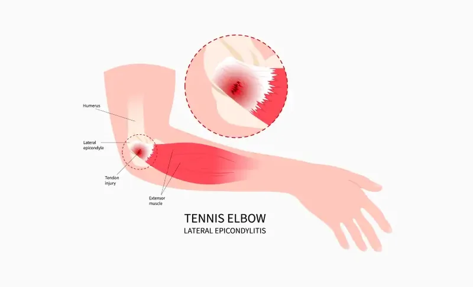
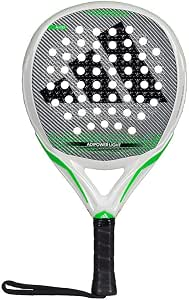

Tendinite et Padel : Quelle raquette choisir pour protéger son coude ?

Le fameux "tennis elbow" (ou épicondylite) est la blessure numéro un des joueurs de padel. Les frappes répétées, le poids de la raquette et les vibrations générées à chaque impact contre la balle ou la vitre finissent par enflammer les tendons de l'avant-bras et du coude. Si vous ressentez une douleur, le repos est primordial, mais le changement de matériel l'est tout autant pour éviter la rechute.
❌ L'erreur qui aggrave la douleur : Les raquettes en forme de Diamant
Jouer avec une raquette en forme de diamant, conçue pour la puissance, place le poids de la raquette vers la tête. Cet équilibre "en tête" crée un effet de levier énorme sur votre poignet et votre coude à chaque frappe. Si vous avez une douleur naissante, fuyez les raquettes d'attaque.
Publicité responsive intégrée
Les 3 critères obligatoires d'une raquette anti-tendinite
Pour soulager vos tendons, votre raquette doit devenir votre amortisseur. Voici les trois caractéristiques non-négociables à rechercher :
Schéma : L'importance d'une gomme souple (FOAM) pour absorber les vibrations avant qu'elles n'atteignent le bras.
1. Une gomme souple (FOAM ou EVA Soft)
C'est le critère le plus vital. Le noyau de votre raquette doit agir comme un gros coussin. Privilégiez une gomme très souple (souvent désignée par les termes FOAM, Polyéthylène, ou EVA Soft). Elle se déformera à l'impact et absorbera une grande partie des vibrations, contrairement à une gomme dure qui retransmet l'onde de choc directement dans votre bras.
2. Un poids allégé (moins de 360g)
Une raquette lourde demande beaucoup d'effort musculaire à votre avant-bras pour être freinée (lors d'une volée) ou accélérée. Si vous souffrez du coude, orientez-vous impérativement vers des modèles allégés, pesant entre 345g et 360g maximum. La mention "Light" ou "Women" est souvent un excellent indicateur d'un poids réduit.
3. Un équilibre bas (Poids en manche)
Choisissez obligatoirement une raquette de forme ronde. L'équilibre du poids sera situé près de votre main (en manche), offrant une maniabilité totale sans forcer sur vos tendons.
💡 L'astuce du coach : Les grips anti-vibrateurs
En plus de changer de raquette, pensez à installer un grip orientée conforts en silicone sous votre surgrip habituel (le plus connu étant le système Hesacore). Ses alvéoles réduisent drastiquement les mauvaises ondes avant qu'elles n'atteignent votre paume de main, et améliorent la prise sans avoir à serrer le manche trop fort.
3 modèles confortables pour soulager votre bras
Voici une sélection de raquettes respectant strictement les 3 critères (Gomme souple, Poids léger, Forme ronde) :
Head Zephyr Ultralight
Avec seulement 340g sur la balance et la célèbre mousse Comfort Foam de Head, c'est l'une des raquettes les plus maniables et douces du marché.
🛒 Voir sur AmazonDunlop Rapid Control
Une excellente option à budget très doux. Sa forme ronde et sa gomme "Ultra Soft" garantissent une frappe souple qui préserve les articulations des joueurs loisirs.
🛒 Voir sur AmazonAdidas Match Light
Une mousse EVA Soft Performance couplée à un poids plume (345g). Parfaite pour limiter la fatigue musculaire de l'avant-bras sur les longs matchs.
🛒 Voir sur AmazonOption légère mise en avant pour le confort de jeu

Adidas Adipower Light
C'est la référence haut de gamme absolue pour combiner performance et soulagement articulaire. Avec son poids plume (environ 345g), son équilibre parfaitement centré et sa mousse EVA Soft Energy, elle peut contribuer à atténuer certaines vibrations ressenties. Pensée pour la légèreté et le contrôle, c'est un véritable coussin d'air pour votre coude, tout en gardant une excellente précision.
🛒 Voir les disponibilités sur AmazonEn résumé : Les 3 règles d'or contre la tendinite
Pour préserver votre coude sur le long terme, rappelez-vous de ces fondamentaux : jouez impérativement avec une raquette ronde, légère et dotée d'une mousse souple. Ne négligez jamais vos jours de repos en cas de douleur, et surtout, prenez toujours le temps de bien échauffer votre bras avant de frapper vos premières balles !